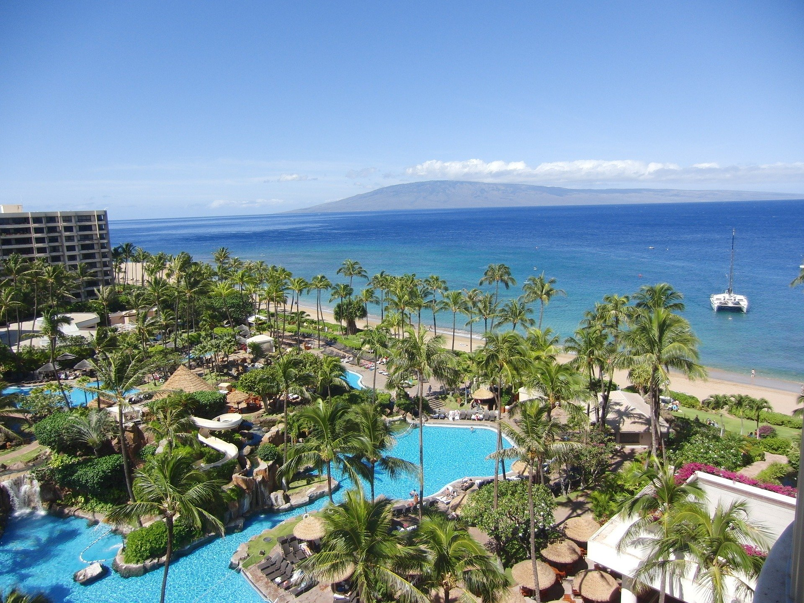
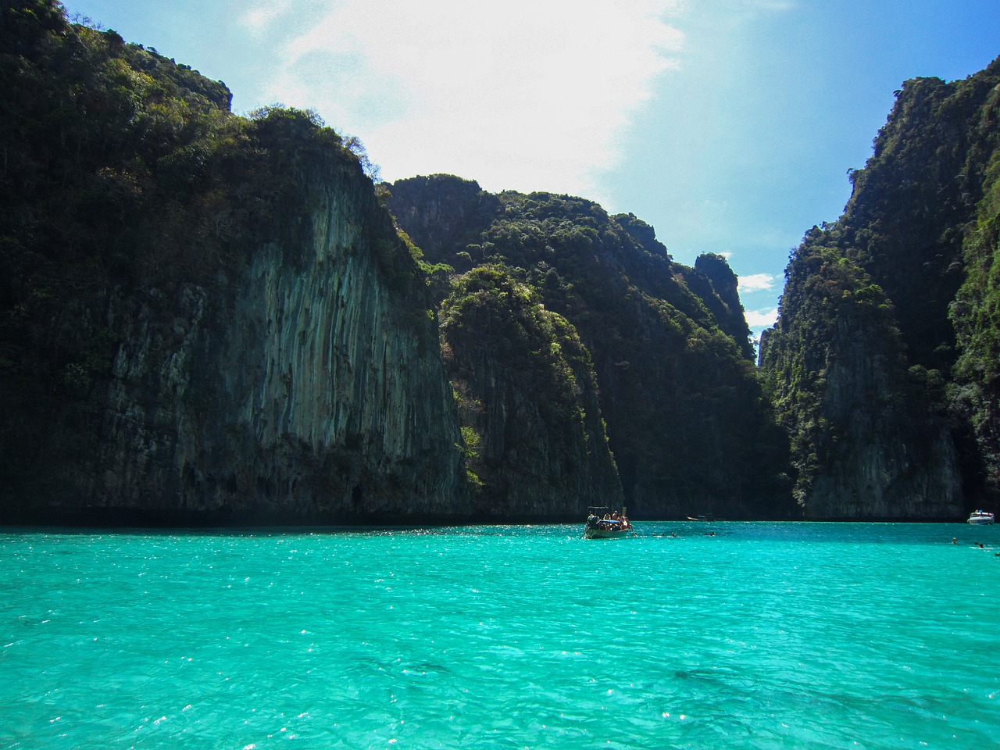
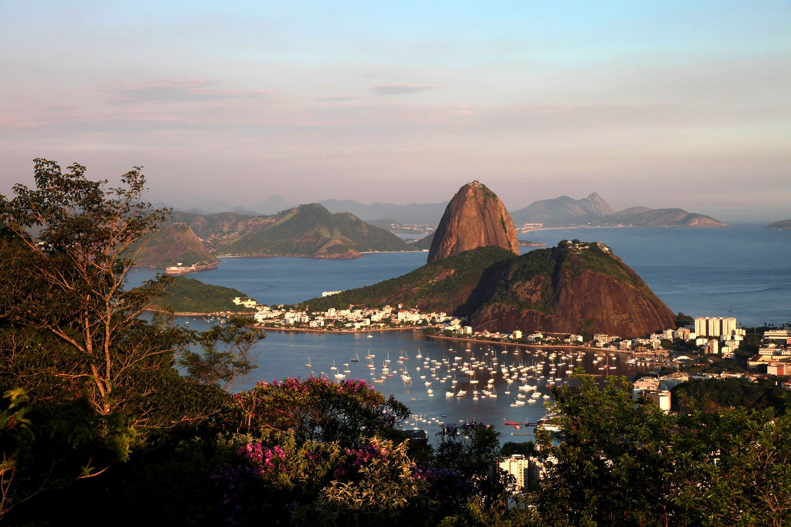
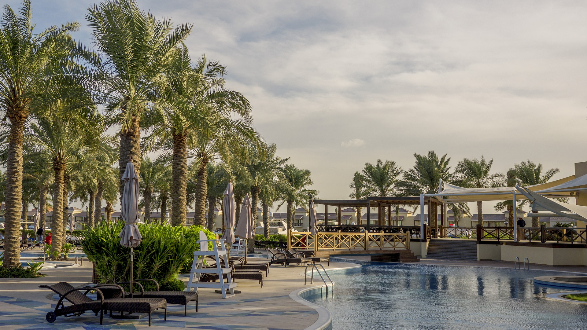
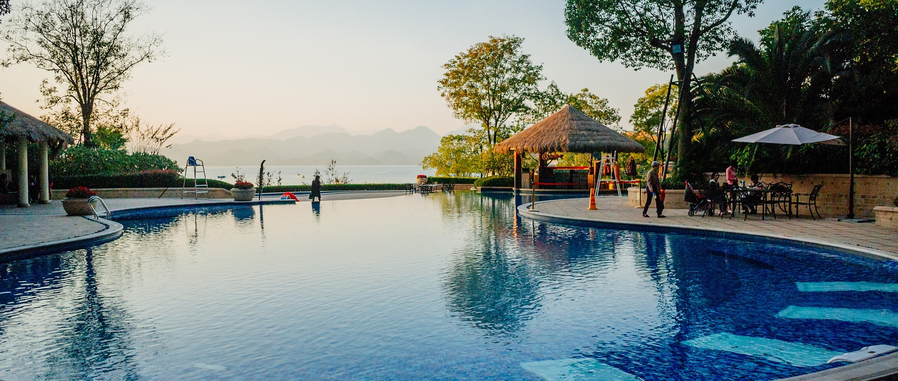
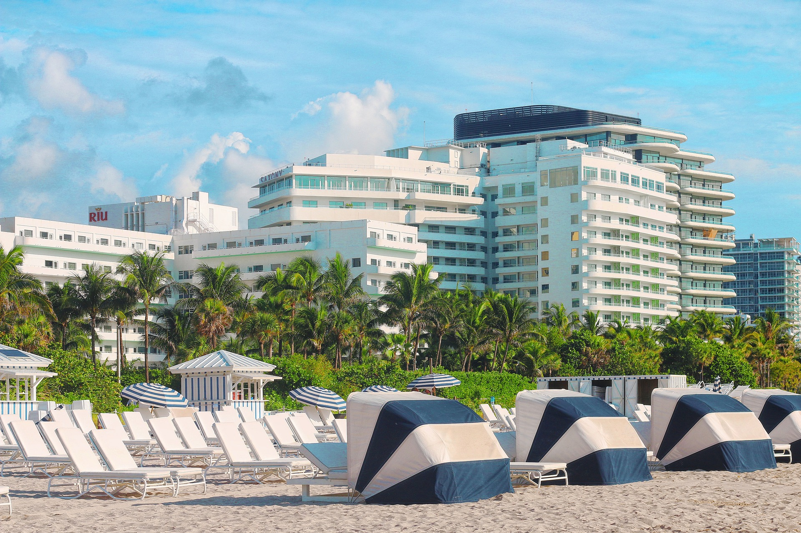

RESORTS EM DESTAQUE
Escolha o Lugar que mais combina com você:

Hawaii, um estado dos EUA, é um arquipélago vulcânico isolado no PacíficoCentral. Suas ilhas são conhecidas pelas paisagens acidentadas compostas de
penhascos, cachoeiras, florestas tropicais e praias com areia dourada, vermelha,
preta e até mesmo verde. Das 6ilhas principais, Oahu tem a maior cidade e capital
do Havaí, Honolulu, que abriga a praia de Waikiki, em formato de lua crescente, e
os memoriais da Segunda Guerra Mundial, em Pearl Harbor.
TUDO INCLUSO

Tailândia, é um país do Sudeste Asiático conhecido pelas praias tropicais, pelospalácios reais suntuosos, pelas ruínas antigas e pelos templos ornamentados com
figurasde Buda. Bangcoc, a capital, tem uma paisagem urbana ultramoderna que
contrasta com comunidades tranquilas à beira de canais e com os emblemáticos
templos de Wat Arun e Wat Pho, além do Templo do Buda de Esmeralda (Wat Phra
Kaew). Entre os balneários próximos, o movimentado Pattaya e o elegante Hua Hin.
TUDO INCLUSO

Brasil, um vasto país sul-americano, estende-se da Bacia Amazônica, no norte,até os vinhedos e as gigantescas Cataratas do Iguaçu, no sul. O Rio de Janeiro,simbo-
lizado pela sua estátua de 38 metros de altura do Cristo Redentor, situada no topo
do Corcovado, é famoso pelas movimentadas praias de Copacabana e Ipanema, bem
como pelo imenso e animado Carnaval, com desfiles de carros alegóricos, fantasias
extravagantes e samba.
CAFÉ DA MANHÃ - PENSÃO COMPLETA

Barein, país que compreende mais de 30 ilhas do Golfo Pérsico, está no centro dasprincipais rotas comerciais desde a antiguidade. Na sua moderna capital, Manama,
o aclamado Museu Nacional do Barein expõe artefatos da antiga civilização Dilmun,
que ocupou a região por milênios. O próspero bazar Bab al-Bahrein oferece mercado-
rias como tecidos coloridos fabricados à mão, especiarias eaté pérolas.
TUDO INCLUSO

China é uma nação muito populosa da Ásia Oriental cuja ampla paisagem abrangepradarias, desertos, montanhas, lagos, rios e mais de 14.000 km de litoral. A capital
Pequim combina a arquitetura moderna com locais históricos, como o complexo de
palácios da Cidade Proibida e a Praça da Paz Celestial. Xangai é um centro financeiro
global repleto de arranha-céus. A emblemática Muralha da China corta a região norte
do país de leste a oeste.
MEIA PENSÃO - PENSÃO COMPLETA

Miami é uma cidade internacional no extremo sudeste da Flórida. Sua influênciacubana se reflete nos cafés e lojas de charutos que ocupam a Calle Ocho, em Little
Havana. Nas águas de cor azul-turquesa da Biscayne Bay ficam Miami Beach e
South Beach,um bairro glamouroso conhecido por suas construções coloridas em
art déco, areia branca, hotéis para surfistas e casas noturnas famosas.
TUDO INCLUSO

2020 MULTI VIAGENS - TODOS OS DIREITOS RESERVADOS